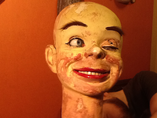

Untitled
1/3/2013
LOOKING SORRY FOR HIMSELF?
Question: I hope you can help me with this. I live in Norway, so am basically having to find out about this via the net as there is no expertise to go to here for the info I need.
Question: I hope you can help me with this. I live in Norway, so am basically having to find out about this via the net as there is no expertise to go to here for the info I need.
{kind=link}

I have an old ventriloquist dummy that I need to fix up for a show (50-60yrs old approx). The paint on his face is cracked, etc. I realise I will have to carefully sand off the old paint before repainting. My question is what kind of paint would be best to use for this? He seems to be made of some kind of compressed cardboard/paper, though I am not sure.
Also he has a small hole on his eyelid. I have wracked my brain trying to think of the material I can use to repair this. The hole is where the eye crease is and therefore will be opening and shutting at this point. The edges need to disappear into the original material of the area. I thought of chamois leather but not sure how to lose the edges. Any suggestions? I would be very grateful for any advice you can give me. Poor 'Harald 'is looking very sorry for himself.
* * * * * *
From Mr. D: Your figure was built by Len Insull and likely sold by Davenport Co. of England. The head is actually made of paper mache, so I do not recommend trying to sand all the existing paint off. Simply sand to remove any loose paint and to smooth edges. I use acrylic paints. But you will need to take special care with the leather areas (winkers, lower and upper lip). Use paints very sparingly in the leather areas. Paint on leather will make it stiff, brittle and more likely to crack and tear. I mix "textile medium" with the paint used on the leather to help keep the paint flexible. (Textile Medium is a liquid. It is intended to be mixed with acrylic paints when the paint is uses on cloth material. Generally sold at the same stores that sell the paints.)
If I was making the repair on the winker, I would not try to repair the existing leather. Rather, I would replace it completely (a job that can be done from the outside). I would use the thinnest piece of chamois I could find. Spackling can be used to feather out the upper edge of the leather (below the eyebrow) so the edge does not show.